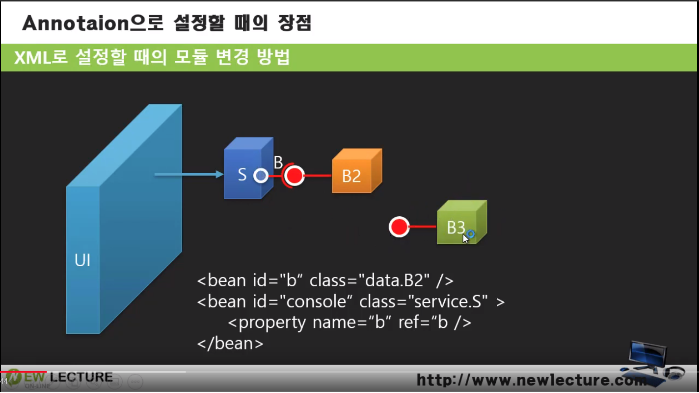
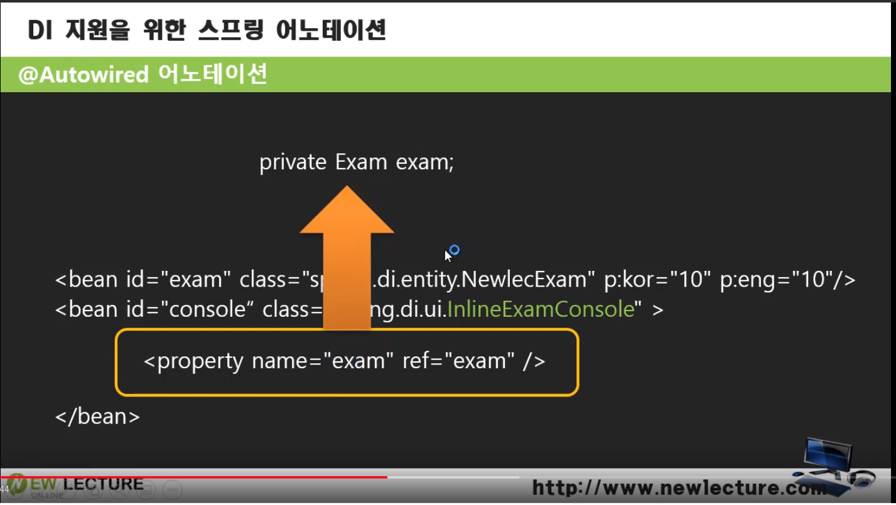

This is personal study note
Copyright and original reference are from:
www.youtube.com/watch?v=S065KRjXRSY
스프링 프레임워크 강의 12강 - 어노테이션을 이용할 때의 장점과 @Autowired를 이용한 DI 해보기
스프링_프레임워크_강의_12강_어노테이션을_이용할_때의_장점과_@Autowired를_이용한_DI_해보기
================================================================================
- 초기화 설정
- xml 사용, 외부파일에 설정 정보 작성
- 어노테이션을 코드파일에 작성
================================================================================
================================================================================
- B: 인터페이스
- B2: B 인터페이스를 구현하는 클래스 (객체)
- S 객체: B 인터페이스를 사용
- S 와 B2 의 결합상태, 두 객체를 생성하는 코드를 설정으로 뺌
- 결합상태를 바꾸고 싶을 때, 코드를 수정하지 않기 위해서
- 설정을 바꿔서 객체의 결합을 바꿔보자
================================================================================

- B3 객체: B 인터페이스를 구현
================================================================================
- 설정을 바꿔야함 (B2 부분)
- 소스코드 안바꾸고 설정만 변경하면 결합상태 바꿀수 있다
- 과거에는 이걸로 만족
- 앉으면 눕고싶다고, 이것도 불편해지기 시작
- 객체를 바꾸면 설정도 같이 바뀌면 좋겠다
- 코드에 메타데이터를 심어서 이런일이 가능해 짐
================================================================================
- @Component
- 스프링이 코드를 읽게 함
- 스프링이 @Component 를 발견하면 이걸 객체화함
================================================================================
- 객체가 바뀌고, @Component 는 B3가 가지고있느니까 이게 객체화됨
================================================================================
- property 부분이 DI 이다 (결합, Injection 부분, 객체 생성은 다음시간에 배움)
- console 에 가면 exam setter 가 있다
- 이 setter 가 사용하는 속성 exam 이 있다
- 이 속성에 @Autowired 를 붙임

- 그럼 지울 수 있다